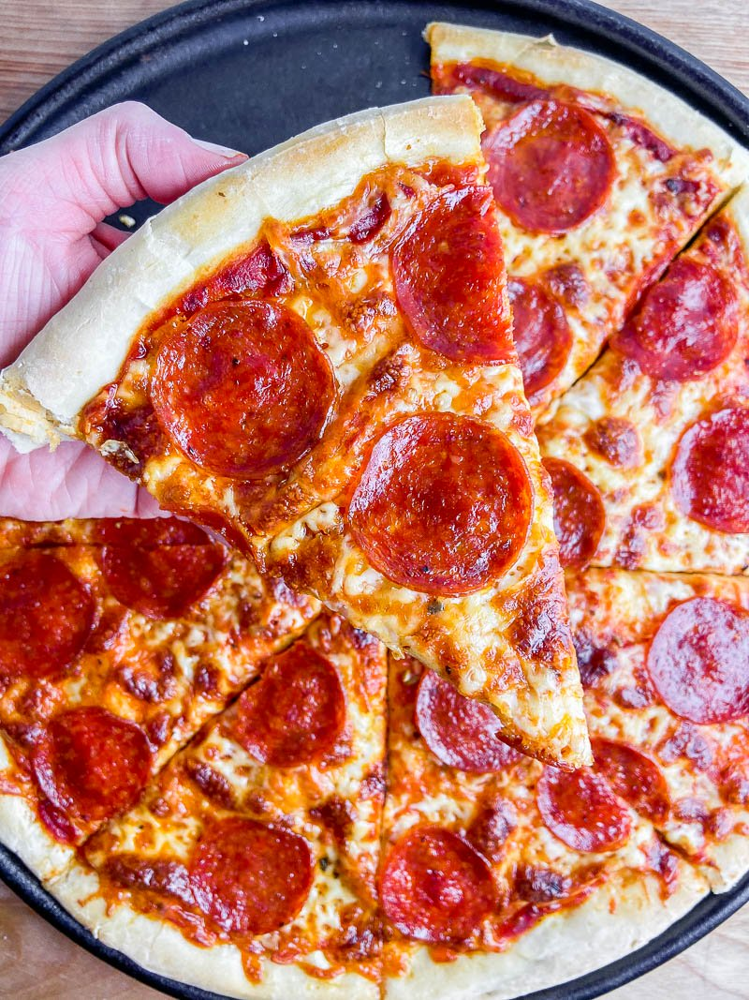

Pizza

I have for you today a recipe for pizza that you can make at home.
Ingredients
- 1 pkg of active dry yeast
- 1 tsp sugar
- 1 1/4 cups of warm water
- 1/4 cup canola oil
- 1 tsp salt
- 3 1/2 to 4 cups of AP flour
- 1/2 lbs ground beef
- 1 sm onion, chopped
- 1 can(15oz) tomato sauce
- 3 tsp dried oregano
- 1 tsp dried basil
- 1 medium green pepper, diced
- 2 cups shredded part-skimmed mozzarella cheese
Steps
- In large bowl, dissolve yeast and sugar in water; let stand for 5 minutes.
Add oil and salt. Stir in flour, 1 cup at a time, until a soft dough forms.
- Turn onto a floured surface; knead until smooth and elastic, 2-3 minutes.
Place in a greased bowl, turning once to grease the top. Cover and let rise in a warm place until doubled, about 45 minutes.
Meanwhile, cook beef and onion over medium heat until beef is no longer pink, breaking meat into crumbles; drain.
- Punch down dough; divide in half. Press each half into a greased 12-in. pizza pan. Combine the tomato sauce, oregano and basil; spread over each crust.
Top with beef mixture, green pepper and cheese.
- Bake at 400° for 25-30 minutes or until crust is lightly browned.